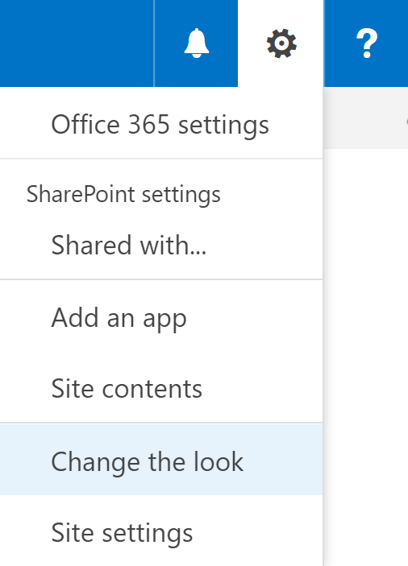
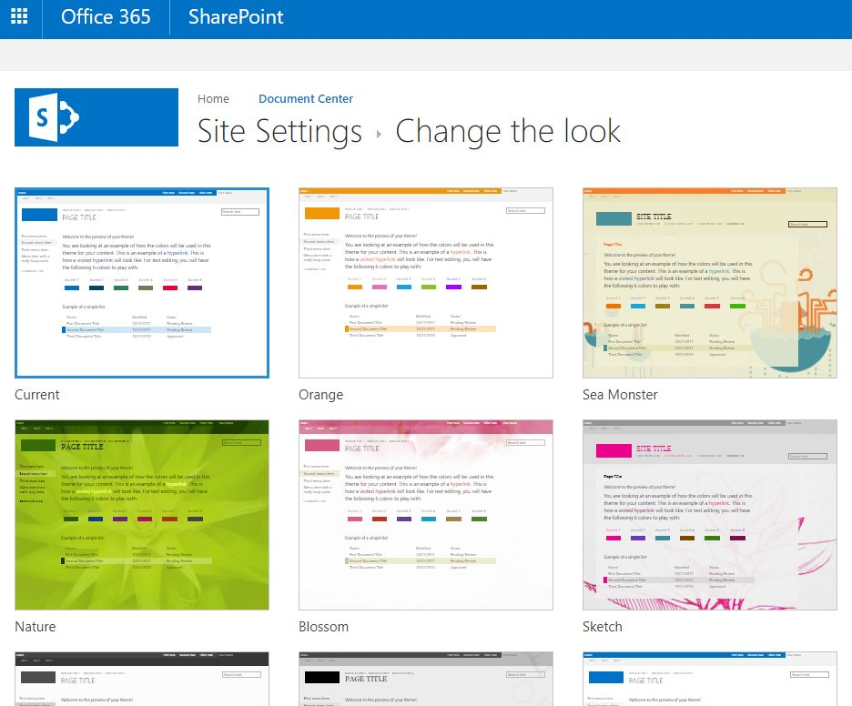
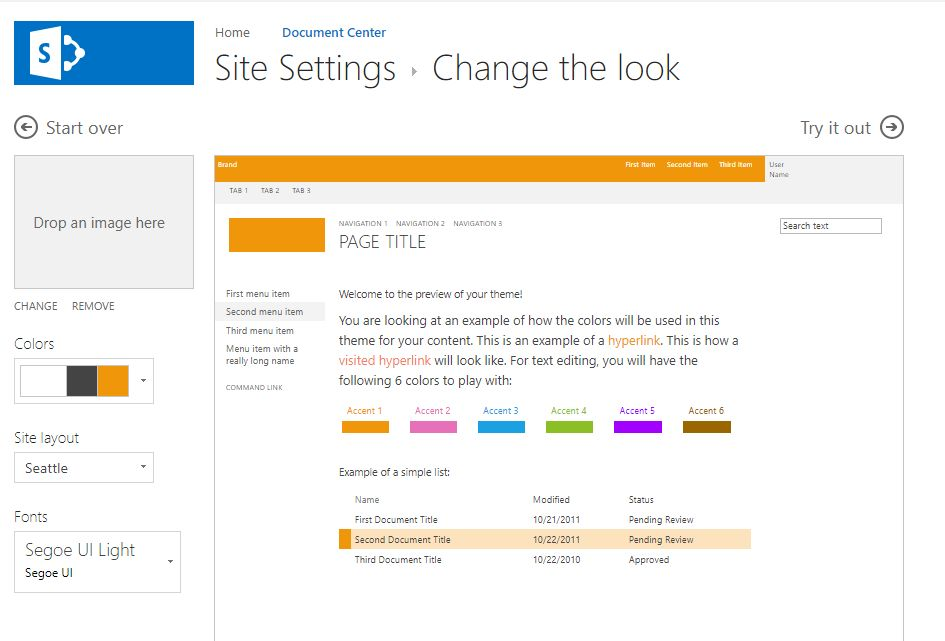
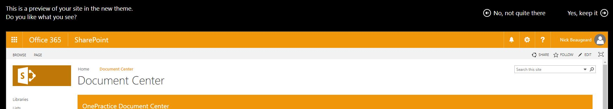

|
<< Click to Display Table of Contents >> Navigation: SharePoint Site > Root Site > Themes |
OnePractice is SharePoint Theme enabled meaning if you change your theme in Office 365 SharePoint, it will reflect in the Templates, Mail and Mail Templates apps.
1.Navigate to the SharePoint Settings Cog and select Change the Look.

2.Select a theme you like and make any other modifications you wish. E.g. colours, layout, font etc. The click Try it out.
 
3.If you like the new theme, select Yes, keep it. Please note, the apps will not appear in the new theme colour on the preview screen but will update once you accept the changes.

4.Templates, Mail and Mail Templates will update to reflect your changes - this might take a minute or two.